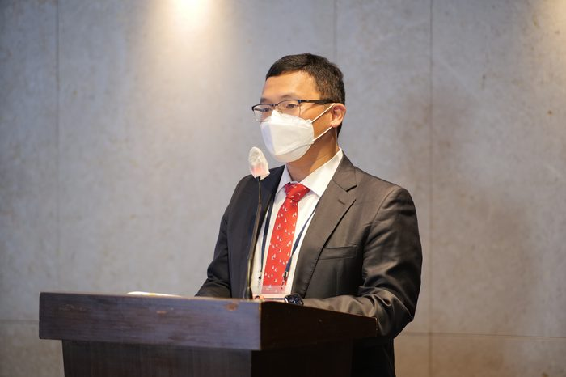
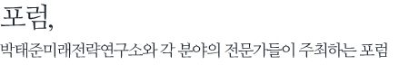
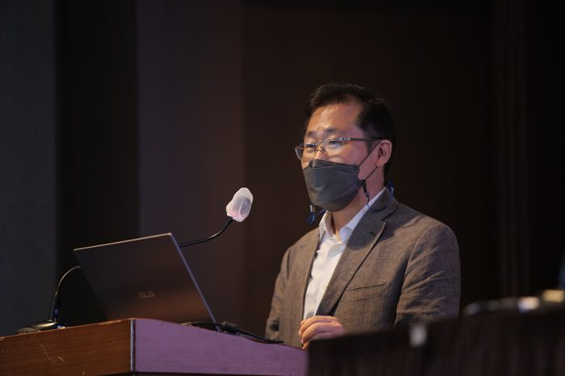
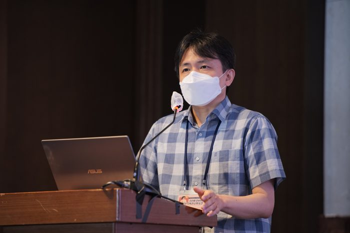
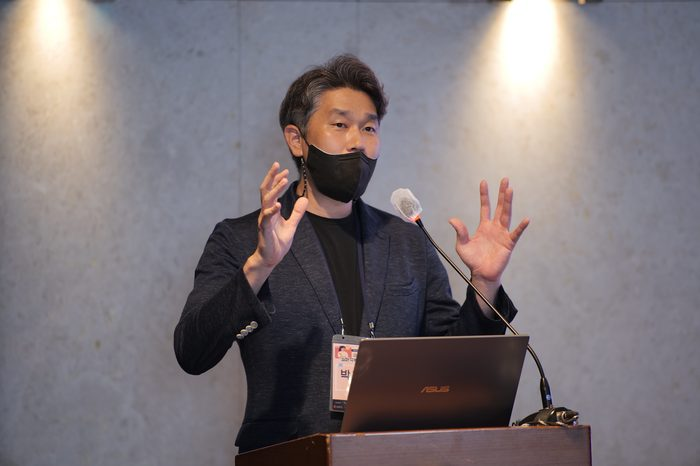
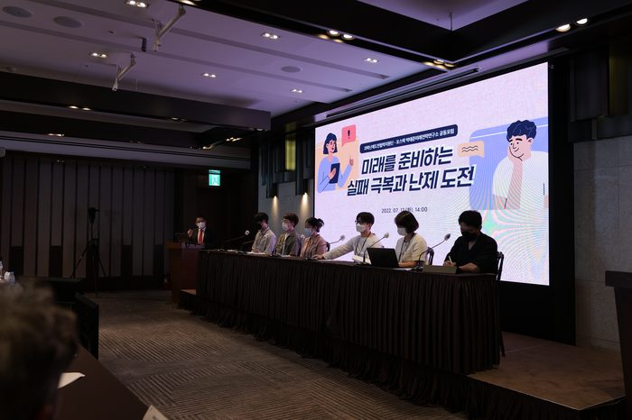
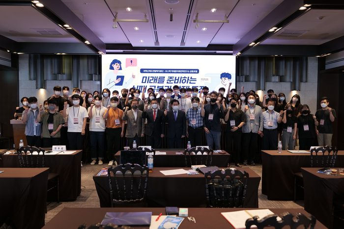

일자 2022.7.12

행사개요
행 사 명 : 미래를 준비하는 실패극복과 난제도전 포럼
주 제 : 미래를 준비하는 실패극복과 난제도전
기 간 : 2022.7.12(화) 14:00 ~16:40
장 소 : 엘타워 골드홀 (지하 1층)
프로그램
2022-08-23
14:00 - 47:55 개회사
- 정우성, 포스텍 박태준미래전략연구소 소장
14:10 - 15:10 초청강연
- 주제: 이스라엘 R&D 혁신과 실패
- 연사: 최태훈, 한국생산기술연구원 수석연구원, 전 한-이스라엘재단 사무총장
15:10 - 15:40 사례발표
- 주제: 과학난제 도전과 극복
- 연사: 김도년, 서울대 인공모포제네시스연구단 단장, 박현우 연세대 AST 암전이연구단 단장
15:40 - 16:40 토론과 교류
- 하브루타 토론
- 정우성, 포스텍 박태준미래전략연구소 소장
16:40 - 16:50 폐회와 미래계획 제안
- 성창모 과학난제도전협력단장
2022-08-23
내용
포스텍 박태준미래전략연구소와 국가과학난제도전협력단이 공동 주최한 '미래를 준비하는 실패극복과 난제도전' 포럼은 전국 대학생 및 대학원생 100여명과 유관인사들의 참석으로 진행되었습니다.
1부는 정우성 포스텍 박태준미래전략연구소 소장의 개회사를 시작으로 '이스라엘 R&D 혁신과 실패'라는 주제로 최태훈 한국생산기술연구원 수석연구원의 강연이 이뤄졌습니다.
2부에는 김도년 서울대 인공모포제네시스연구단 단장과 박현우 연세대 AST암전이연구단 단장의 과학난제도전과 극복에 대한 사례발표가 진행되었습니다.
이후 정우성 포스텍 박태준미래전략연구소장 주재로 패널학생들과 질의응답을 통해 실패와 난제에 대한 하브루타 토론시간을 가졌으며, 성창모 과학난제도전협력단장의 폐회사를 끝으로 포럼을 마쳤습니다.





